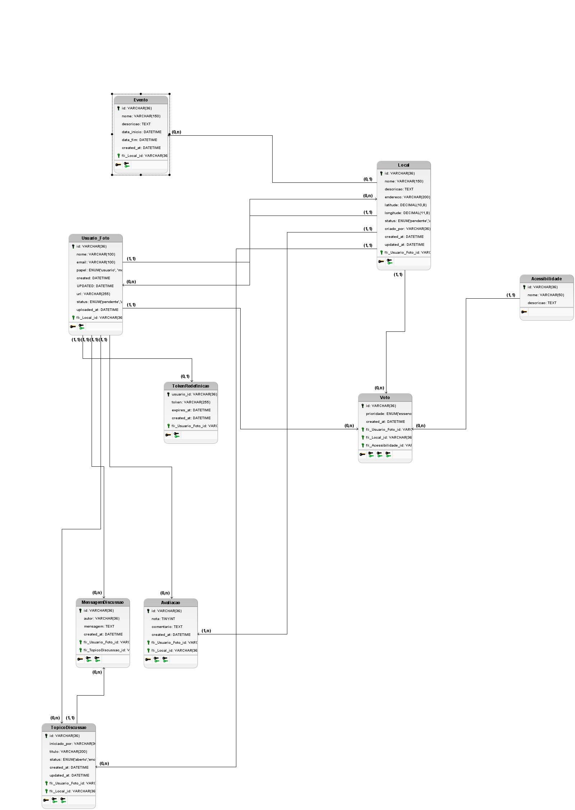
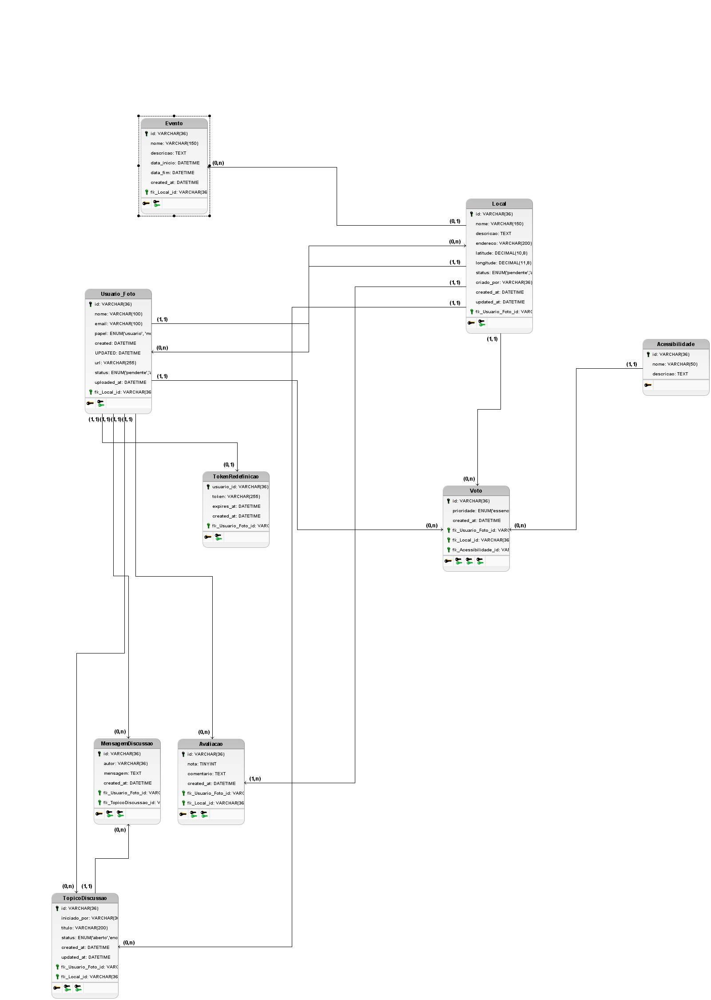

Visão Geral do Projeto
Objetivo
O Mapeamento com Acessibilidade para Atividade Comunitária é uma plataforma colaborativa que visa mapear e compartilhar informações sobre acessibilidade em locais públicos, facilitando a participação comunitária de pessoas com mobilidade reduzida.
Principais Benefícios:
- Centralização de informações sobre acessibilidade
- Fomento à participação comunitária inclusiva
- Identificar locais para pessoas com deficiência
- Conscientização sobre acessibilidade urbana
Público-Alvo
Pessoas com deficiência
Que necessitam de informações sobre acessibilidade
Organizações comunitárias
Que promovem eventos inclusivos
Gestores públicos
Interessados em melhorar a acessibilidade urbana
Tecnologias Principais
Story Mapping
Épicos Principais
Autenticação e Perfis
Gerenciamento de contas de usuários e perfis
Mapeamento de Locais
Cadastro e visualização de locais acessíveis
Avaliações e Comentários
Feedback da comunidade sobre acessibilidade
Eventos Comunitários
Organização de atividades inclusivas
Features por Épico
Autenticação e Perfis
Mapeamento de Locais
User Stories
Como um usuário com deficiência motora, eu quero...
"Poder encontrar locais com rampas de acesso para que eu possa frequentar espaços públicos com autonomia."
"Verificar se os banheiros são adaptados antes de sair de casa para evitar situações constrangedoras."
Como um organizador comunitário, eu quero...
"Identificar locais acessíveis para realizar eventos inclusivos que atendam a todos os participantes."
"Compartilhar informações sobre acessibilidade dos locais onde realizo eventos para ajudar outros organizadores."
Critérios de Aceitação
Para a user story "Encontrar locais com rampas de acesso":
- O sistema deve exibir um marcador especial para locais com rampas
- Deve ser possível filtrar locais por "possui rampa"
- As informações sobre rampas devem ser verificáveis por fotos
- O status de acessibilidade deve ser atualizável pela comunidade
Casos de Uso

Adicionar Novo Local
1. Pré-condições
- Usuário deve estar autenticado
- Local não deve existir previamente no sistema
2. Fluxo Principal
- Usuário acessa a opção "Adicionar Local"
- Sistema exibe formulário com campos obrigatórios
- Usuário preenche informações básicas (nome, endereço)
- Usuário seleciona tipos de acessibilidade disponíveis
- Usuário pode adicionar fotos comprovando acessibilidade
- Usuário submete o formulário
- Sistema valida e armazena as informações
- Sistema confirma o cadastro com mensagem de sucesso
3. Fluxos Alternativos
3.1 Local já existe:
- Sistema identifica local semelhante já cadastrado
- Sugere ao usuário adicionar informações complementares ao registro existente
Buscar Local Acessível
1. Pré-condições
- Nenhuma - disponível para todos os usuários
2. Fluxo Principal
- Usuário acessa a página de busca
- Sistema exibe mapa com locais próximos
- Usuário aplica filtros de acessibilidade conforme necessidade
- Sistema atualiza mapa com resultados filtrados
- Usuário seleciona local para ver detalhes
- Sistema exibe informações completas e avaliações
Avaliar Local
1. Pré-condições
- Usuário deve estar autenticado
- Usuário deve ter visitado o local recentemente
2. Fluxo Principal
- Usuário acessa página do local
- Usuário clica em "Avaliar este local"
- Sistema exibe formulário de avaliação
- Usuário atribui nota (1-5 estrelas)
- Usuário pode adicionar comentário e fotos
- Usuário confirma avaliação
- Sistema atualiza informações do local
Arquitetura Técnica
 

Diagrama de Arquitetura
Frontend
- React
- Vite
- JavaScript
- Leaflet/OSM
- Tailwind CSS
- HTML e CSS
Backend
- Node.js
- Express
- JWT Authentication
Banco de Dados
- PostgreSQL
- PGAdmin
- Migrations/Seeders
- Servidor
Fluxo de Dados
Configuração do Ambiente
Pré-requisitos
- Node.js 18.x ou superior
- PostgreSQL 14 ou superior
- PGAdmin 6 (opcional para gerenciamento visual)
- Git para controle de versão
- Yarn ou npm
Passo a Passo
1. Clonar o repositório
git clone https://github.com/unb-mds/mapadaacessibilidade.git
cd mapadaacessibilidade2. Configurar banco de dados
Crie um banco PostgreSQL e configure as variáveis de ambiente:
# .env
DB_HOST=localhost
DB_PORT=5432
DB_NAME=acessibilidade_db
DB_USER=postgres_user
DB_PASS=postgres_password3. Instalar dependências
# Instalar dependências do backend
cd backend
yarn install
# Instalar dependências do frontend
cd ../frontend
npm install4. Executar migrações e seeders
# No diretório backend
npm sequelize db:migrate
npm sequelize db:seed:all5. Iniciar servidores
# Backend (em um terminal)
npm dev
# Frontend (em outro terminal)
npm devO frontend estará disponível em http://localhost:3000 e o backend em http://localhost:5000
Variáveis de Ambiente
| Variável | Descrição | Obrigatório | Valor Padrão |
|---|---|---|---|
| DB_HOST | Host do banco de dados | Sim | localhost |
| DB_PORT | Porta do PostgreSQL | Não | 5432 |
| JWT_SECRET | Chave para tokens JWT | Sim | - |
| MAPBOX_TOKEN | Token da API Mapbox | Não | - |
Como Contribuir
Fluxo de Contribuição
- Encontre uma issue ou crie uma nova descrevendo sua proposta
- Faça um fork do repositório
- Crie um branch descritivo (
git checkout -b feat/nova-funcionalidade) - Implemente suas alterações seguindo os padrões do projeto
- Escreva testes para suas alterações quando aplicável
- Atualize a documentação conforme necessário
- Envie um Pull Request (PR) para o branch
main
Padrões de Código
- ESLint e Prettier configurados - siga os padrões existentes
- Commits semânticos (feat:, fix:, docs:, etc.)
- Componentes React em PascalCase
- Pastas em kebab-case
- Estilos com Tailwind CSS quando possível
- Testes unitários para novas funcionalidades
Modelo de Pull Request
## Descrição
[Descreva o propósito deste PR e as alterações realizadas]
## Tipo de mudança
- [ ] Correção de bug
- [ ] Nova funcionalidade
- [ ] Mudança que requer atualização de documentação
- [ ] Outro (descreva)
## Checklist
- [ ] Meu código segue os padrões do projeto
- [ ] Escrevi testes quando aplicável
- [ ] Documentação atualizada
- [ ] PR vinculado a uma issue